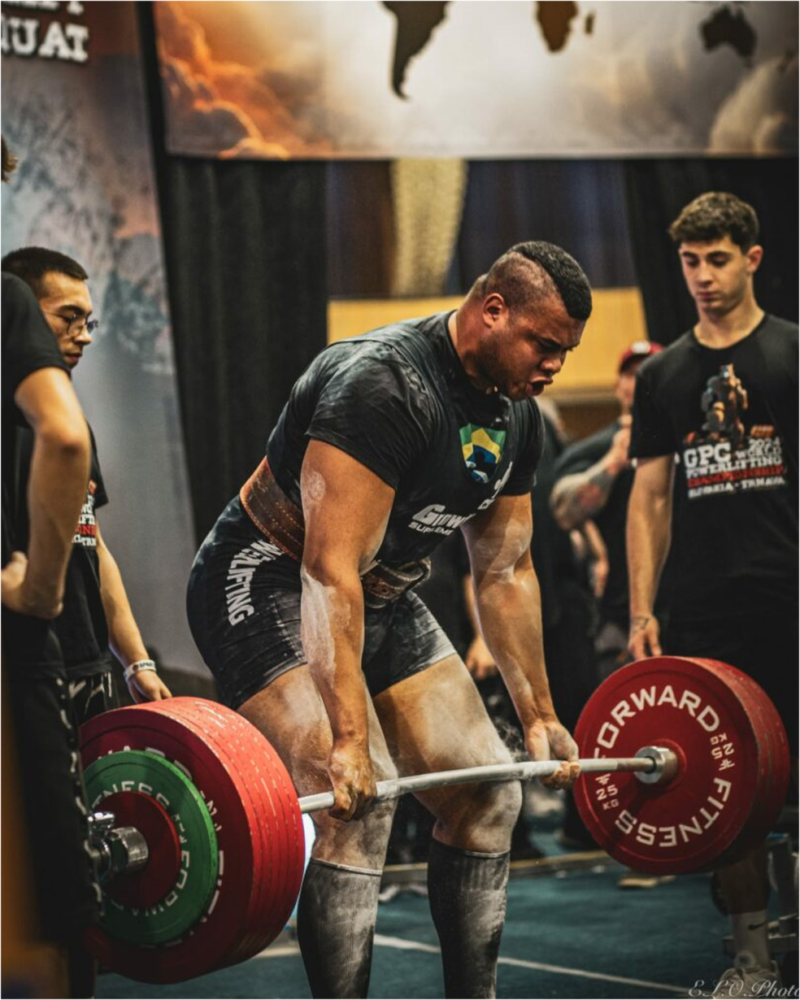
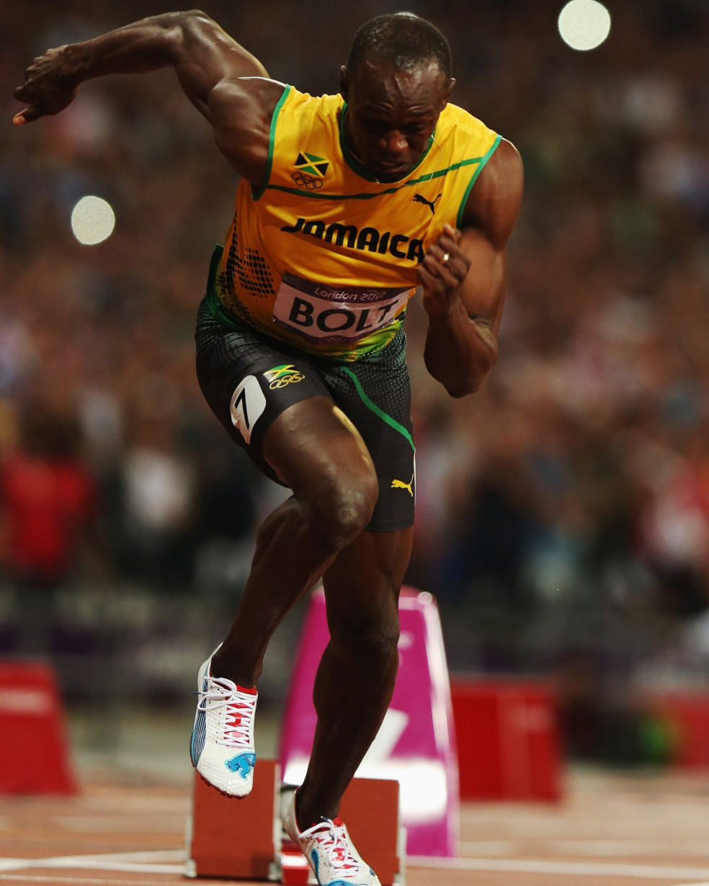

O que é Musculação?
É um tipo de exercício físico que utiliza cargas externas para estimular a contração muscular contra resistência. Esta resistência pode ser proporcionada por aparelhos, pesos livres (halteres, barras, etc.) ou máquinas de musculação.
E para que serve?
A musculação possui diversos benefícios, que incluem:
- Aumento de força e resistência
- Crescimento muscular (hipertrofia)
- Melhora da composição corporal
- Saúde óssea
- Bem-estar mental
Tipos de musculação
| Tipo | Foco | Como é feito |
|---|---|---|
| Hipertrofia | Aumento da massa muscular | Cargas e número de repetições moderados | Resistência | Desenvolvimento de resistência muscular | Cargas mais leves e maior número de repetições |
| Força | Desenvolvimento da força máxima | Cargas muito pesadas e menor número de repetições |
| Potência | Gerar força de forma rápida e explosiva | Exercícios explosivos como saltos e arremessos |

Hipertrofia refere-se ao aumento do tamanho das células musculares, resultando em músculos mais volumosos e fortes. Este processo é fundamental para o ganho de massa muscular e a melhoria da força física. Ela é o fundamento central do fisiculturismo, esporte no qual os atletas buscam o máximo desenvolvimento muscular estético, com ênfase em volume, simetria, definição e proporção. Um exemplo de fisiculturista com essas características é o brasileiro Ramon Dino.

A resistência muscular está relacionada à capacidade dos músculos de sustentar contrações por um longo período sem fadiga. É um componente essencial em modalidades que exigem esforço contínuo, como corrida, natação ou circuitos funcionais. Os treinos para resistência usam cargas mais leves, muitas repetições e curtos intervalos de descanso, desenvolvendo não apenas a resistência local, mas também contribuindo para a melhora do condicionamento cardiovascular.
Treinos com o foco em Força visam aumentar o desempenho em movimentos pesados e exigem estímulos intensos com cargas elevadas e poucas repetições. Esse tipo de treino é fundamental para esportes como o powerlifting, no qual os atletas testam seus limites em exercícios super pesados. Um exemplo notável nesse contexto é o Bitelo, que se popularizou recentemente nas redes sociais por seus feitos impressionantes, tendo apenas 25 anos.
A potência combina força e velocidade, sendo a capacidade de gerar força de forma explosiva em um curto intervalo de tempo. Treinos com foco em potência são comuns em esportes que exigem arranques, saltos ou arremessos, como o atletismo, o futebol e o levantamento olímpico. Os exercícios geralmente envolvem movimentos rápidos com cargas moderadas, visando estimular as fibras musculares de contração rápida.